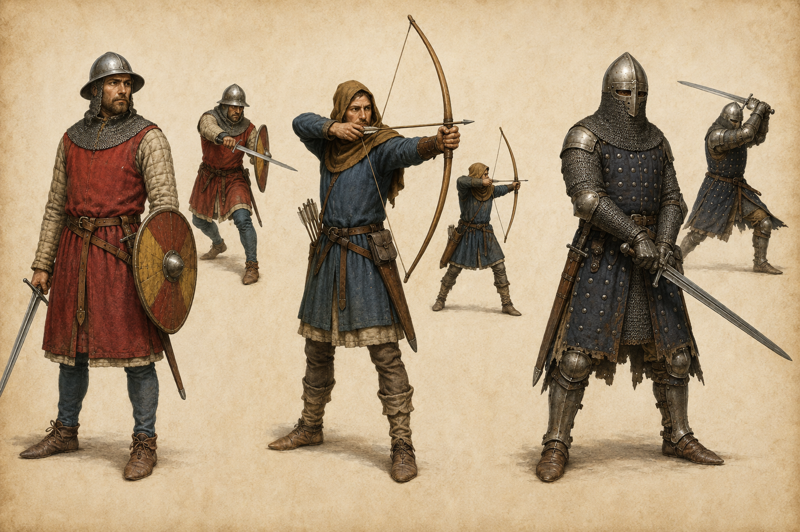
军职
从左到右：战士、弓箭手、重甲兵。重甲兵采用锁子甲、覆面盔、板片衣与有限的四肢板件，避免后世完整板甲。小图展示近战挥砍、拉弓和重击动作。
统一历史锚点：约公元 1250–1350 年的西欧与中欧。重点参考当时的羊毛、亚麻、锁子甲、绗缝甲、罩袍、职业工具和天然染料色彩。
运行时现已拆成三层资源：128×64 基础身体/职业配件、男女统一 256×128 独立脸型、男女统一 128×128 身份服装；两种性别共享像素密度与材质语言，原版护甲、武器与权力象征仍是独立物品。
游戏内快速预览：输入 /saga npc showcase WARRIOR kingdom，会以男女两排生成 COMMONER 至 KING 共 14 名 NPC，并播放各自礼仪动作。

从左到右：战士、弓箭手、重甲兵。重甲兵采用锁子甲、覆面盔、板片衣与有限的四肢板件，避免后世完整板甲。小图展示近战挥砍、拉弓和重击动作。
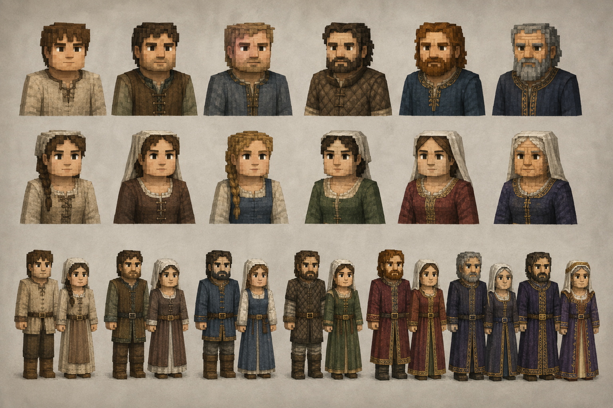
上两排用于确定青年、宽脸、长脸、清秀、风霜与年长面容，以及胡须、辫发、亚麻头巾和面纱方向；下排强调男女服装均随身份改变完整的布料、剪裁、衣长、染色和饰边，而不是只更换领口。
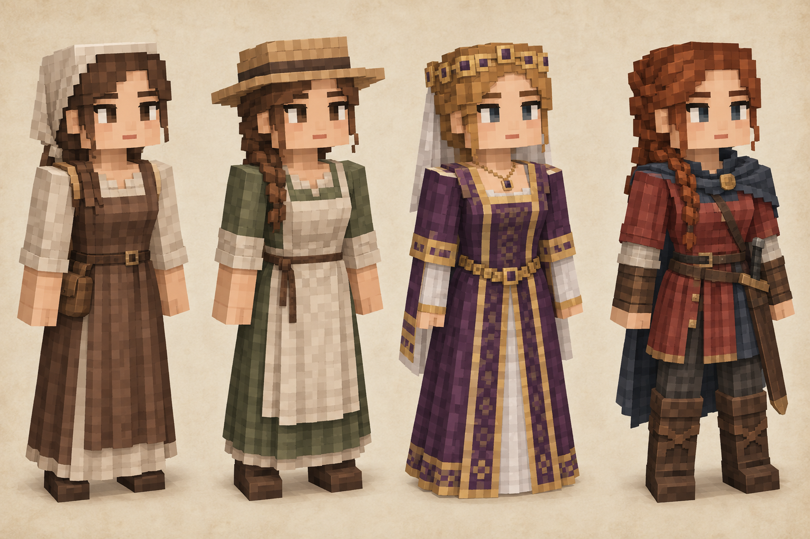
这是美术目标图，不是实机效果图。它用于约束好看、亲和的人类脸，以及发辫、亚麻头巾、羊毛长裙和天然染色方向；实际效果应以紧邻的像素验收图与游戏截图为准。盔甲、武器和职业工具继续由独立装备层负责。
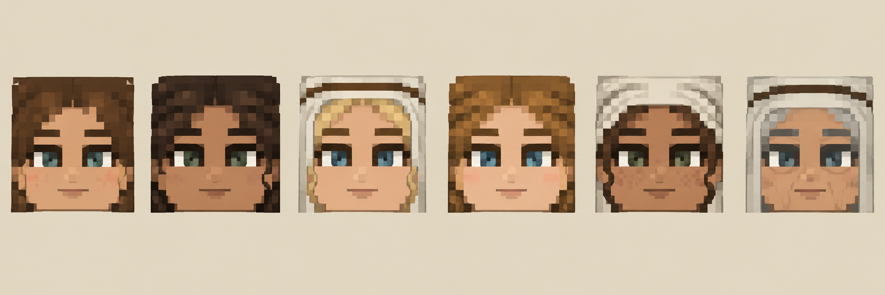
这是转绘标准，不是实机截图。它把展示图中的女性脸统一为严格正面视角，并明确六类脸共用的审美语言：宽额头、分离细眉、带眼白和虹膜的杏仁眼、低对比小鼻与短嘴。下一张才是受游戏 UV 限制后的实际资源。
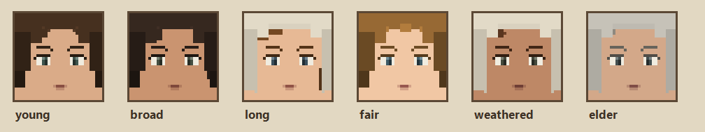
六套脸使用 32×32 正脸采样密度，按上方母版转绘为柔和细眉、窄杏仁眼、双色虹膜、单点高光和短嘴；女性正脸不绘制鼻点、雀斑、麻点、皱纹或零散皮肤噪声，年龄只通过发色与发型表达。此图直接由游戏使用的 256×128 资源生成，而非概念效果图。
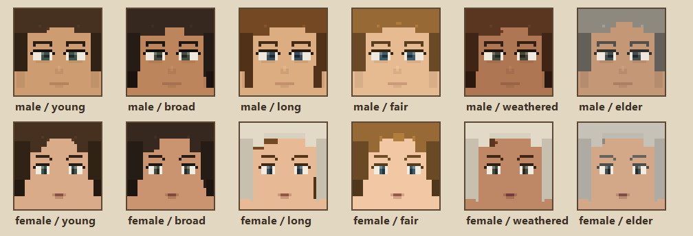
上下两排直接取自游戏使用的 256×128 贴图。男女共享 32×32 有效正脸、眼白/虹膜/高光结构和同级色阶；女性采用更柔和的独立肤色、窄眼和短嘴，并彻底取消脸部斑点，差异仍来自眉形、发际线、头巾与胡须，而不是两套分辨率。
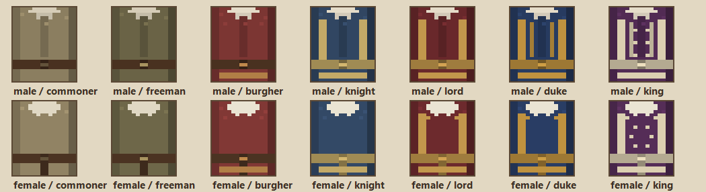
平民至国王的十四套身份服装统一为 128×128，使用相同的织物颗粒、阴影宽度、腰带和身份饰边规则。男女仍保留符合中世纪服装的领口和剪裁差异，但材质不再像来自不同资源包。
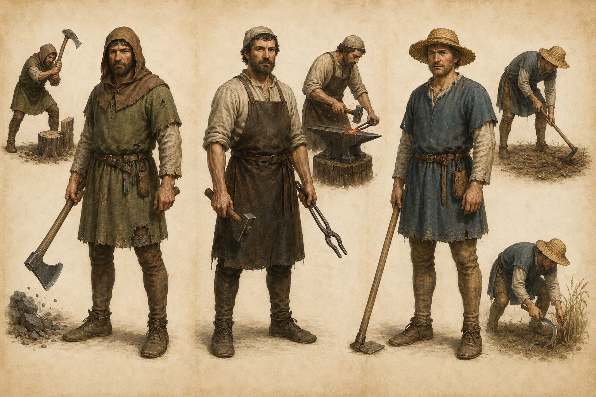
从左到右：工人、铁匠、农民。以粗纺羊毛、亚麻衬衣、头巾、分体裤袜、皮带与翻口鞋为基础；小图展示砍伐、锻打、锄地和收割。
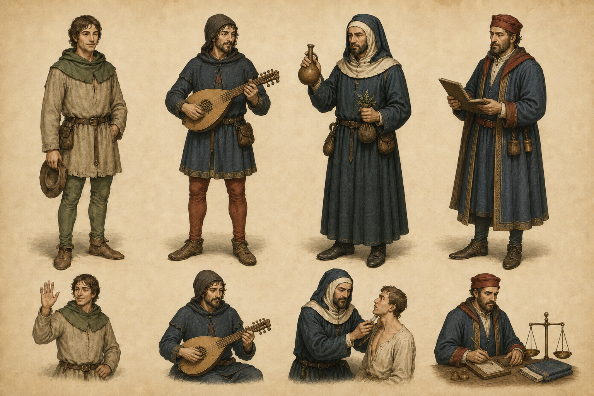
从左到右：无职业居民、吟游诗人、医师、商人。乐师使用 citole 类拨弦乐器；医师采用长袍、兜帽、药草袋和诊断用 matula，不使用近代鸟嘴面具；商人靠优质染色布料体现财富。
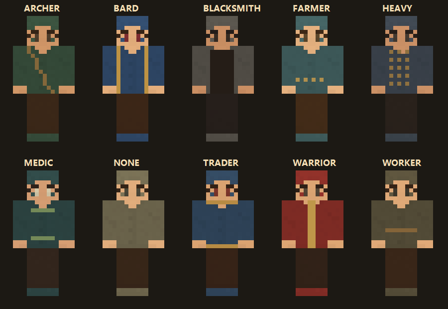
这是第一轮可运行皮肤的正面预览。这里只表现脸、头发、布衣、内衬与围裙；头盔、胸甲、武器、盾牌和工具不画进皮肤，将由 Minecraft 的装备层独立渲染。
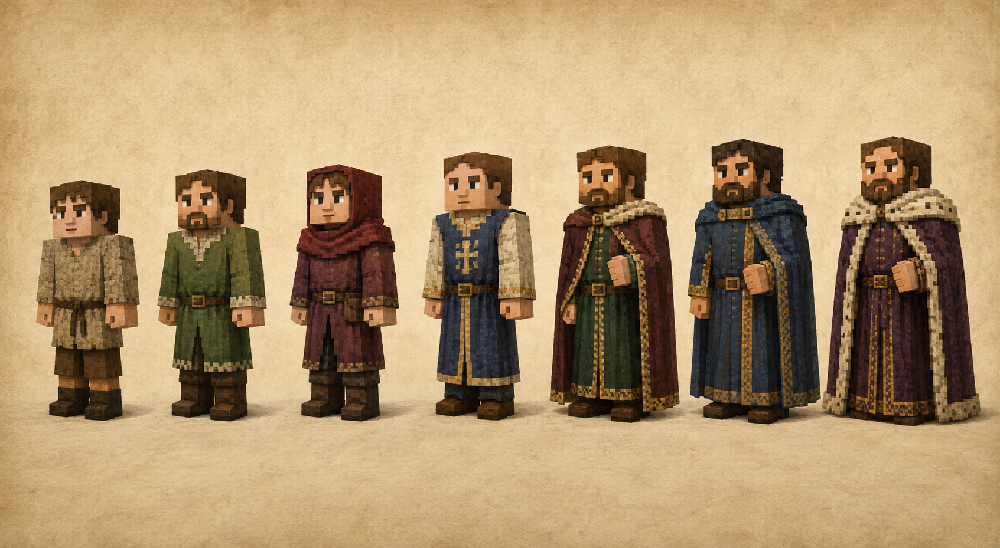
从左到右：平民、自由民、市民、骑士、领主、公爵、国王。地位通过布料质量、染色成本、衣长、饰边和姿态逐级体现；王冠、佩剑、权杖与盔甲故意不画进身份皮肤，它们属于后续独立装备。
设计避免跨入约 1420 年后成熟的全身板甲，也不采用维京、奇幻或文艺复兴轮廓。主要参考：
The Met：Arms and Armor in Medieval Europe · The Met：Fashion in European Armor, 1300–1400 · British Library：Egerton MS 1147 劳作图像目录